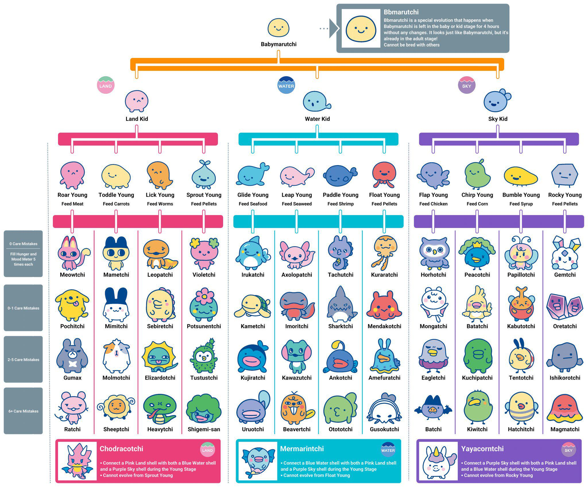
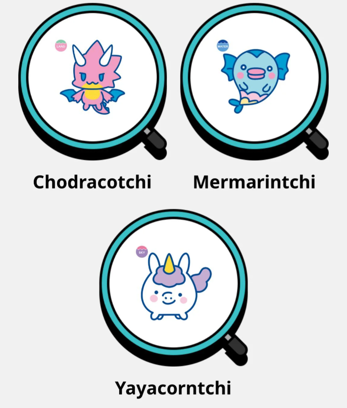

The Magic of Character Evolution
One of the most beloved features of Tamagotchi is its unique evolution system, where the digital pet grows and changes based on how it’s cared for. Starting as a small “baby” character, each Tamagotchi progresses through stages of life—child, teen, and adult—with its final form depending on how well the player meets its needs. Feeding, playing games, cleaning up after it, and paying attention to its calls all play a role in shaping which character the pet will become.
This mechanic adds both surprise and replay value, since the same device can produce completely different characters with each playthrough. Some evolutions are considered “good care” characters, unlocked by consistently keeping the pet happy and healthy, while others emerge from more neglectful care, adding a bit of challenge and mystery. For collectors and enthusiasts, learning the different care paths and discovering rare or secret characters is part of the joy, turning every run into a new adventure and keeping the Tamagotchi experience fresh after nearly three decades.
Memorable Characters and Fan Favorites
Over the years, Tamagotchi has introduced hundreds of unique characters, each with its own charm, quirks, and personality. Some, like Mametchi, Kuchipatchi, and Memetchi, have become iconic mascots of the franchise, appearing in multiple versions, spin-off games, and even anime adaptations. These characters often embody different “types” of care—Mametchi, for example, is known as a model “good care” evolution, while others like Tarakotchi are tied to more laid-back or neglectful play styles. The wide variety of characters ensures that every player has the chance to connect with their favorites, creating an emotional bond that goes beyond the pixels on the screen.
For longtime fans, the joy of discovering which character will emerge has always been central to the experience. Some collectors make it their goal to unlock every possible evolution on a device, while others cherish the nostalgic connection to the characters they raised as kids. With new generations of devices, Bandai continues to introduce fresh faces while still honoring the classics, blending tradition and innovation. This balance has kept Tamagotchi characters at the heart of the franchise, ensuring that no matter the version, players always have someone to care for, grow with, and remember fondly.
Fan favorite characters:
- Mametchi
- Kuchipatchi
- Memetchi
- Violetchi
- And many more...
Secret and Special Evolutions
Beyond the standard care-based characters, Tamagotchi devices often hide secret evolutions that surprise even experienced players. These special characters can appear under unique conditions, such as maintaining perfect care over multiple generations, meeting hidden requirements, or even leaving the pet unattended for just the right amount of time. Some rare characters only appear in certain versions or are tied to special events, making them highly coveted discoveries among fans.
For collectors and enthusiasts, unlocking these secret evolutions adds an extra layer of challenge and excitement. Entire guides and fan communities are dedicated to uncovering the exact conditions for these hidden characters, and the thrill of finally seeing a rare sprite appear never gets old. Whether it’s a mischievous oddball, a magical creature, or a crossover character from another Bandai franchise, these special evolutions remind players that Tamagotchi is full of surprises, encouraging exploration and experimentation with every playthrough.
